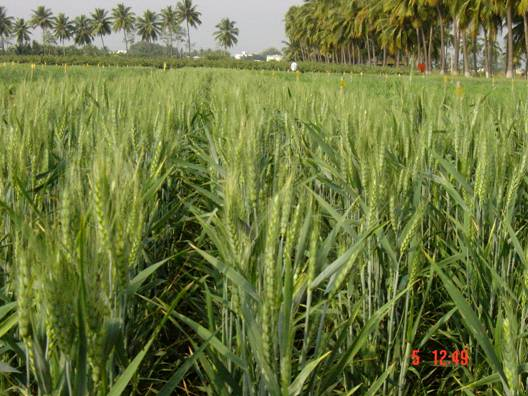
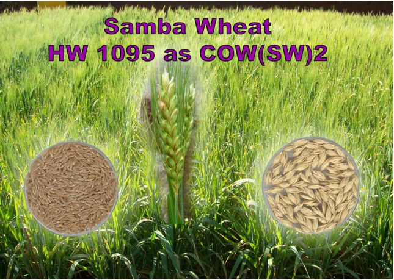

| Crop Improvement - Season and Vareities | ||||||||||||||||||||||||||||||||||||
Suitable districts Plains & adjoining areas near to hills and hills in Theni, Dindigul, Karur, Coimbatore, Erode, Salem, Dharmapuri, Vellore, Thiruvannamalai and Kancheepuram Districts Season Ideal sowing time is 15th October to 1st week of November. Sowing must be completed within the first fortnight of November. Variety : COW(W)1, TNAU Samba Wheat COW 2 Morphological Description of COW(W) 1 and TNAU Samba Wheat COW
|
|  Wheat - COW (W) 1 |
 TNAU - Samba Wheat COW2 |